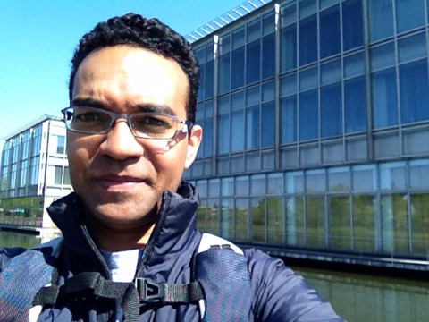

Mohamed Helmy, PhD
Postdoctoral Researcher, Bader Lab
The Donnelly Centre
University of Toronto
Contact Information
160 College Street, Room 630
The Donnelly Centre
University of Toronto
Toronto, Ontario
Canada, M5S 3E1
Map
Email: mohamed.attiashahata[AT]utoronto.ca
Publications
Google Scholar Profile
AWARDS, GRANTS & FELLOWSHIPS
2013~Present: Postdoctoral fellowship from the University of Toronto (UofT), Canada
2012(10)~2013(3): Postdoctoral fellowship from Japan Society for Promotion of Science (JSPS), Japan
2011(4)~2012(9): DC2 Research fellowship from Japan Society for Promotion of Science (JSPS), Japan
2010: Student Publication Award (Life Sciences) from Misr Elkhir Foundation, Cairo, Egypt
2010: Traveling grant from The Human Proteome Organization (HUPO'10), Australia
2010: Taikichiro Mori memorial research grants, Japan
2009:Taikichiro Mori memorial research grants, Japan
2009:RA-Ship, Global Center of Excellence (G-COE), Keio University, Japan
2008:Taikichiro Mori memorial research grants, Japan
2008:Taikichiro Mori memorial travel grants, Japan
2008:RA-Ship, Institute for Advanced Biosciences, Keio University, Japan
2007:RA-Ship, Institute for Advanced Biosciences, Keio University, Japan
2007~2011:Scholarship Masters and PhD studying abroad from Ministry of Higher Education, Egypt
1998:Top Student Award from 6th of October University, Egypt